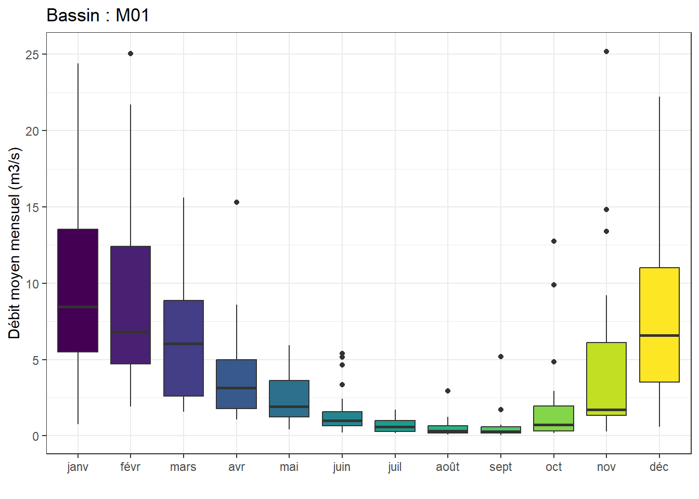

library(airGRteaching)
library(tidyverse)
library(zoo)Projet de modélisation hydrologique des bassins versants
Faculté des Sciences et Ingénierie - Sorbonne Université
Master 2 - Hydrologie-Hydrogéologie-Géochimie Environnementale
Chargement des packages
Définition des chemins
path_donnees <- "Donnees_2023"
fichiers_debit <- list.files(
path = path_donnees,
pattern = "Debit.*\\.csv",
full.names = TRUE
)
fichiers_meteo <- list.files(
path = path_donnees,
pattern = "Meteo.*\\.csv",
full.names = TRUE
)Lecture des données
# Débit
list_chroniques_debit <-
purrr::map(fichiers_debit,
\(x) readr::read_delim(x,
delim = ";",
skip = 1,
col_names = c("Date", "Q_ls", "Q_mmj"),
col_types = cols(Date = readr::col_datetime(format = "%d/%m/%Y"),
Q_ls = readr::col_double(),
Q_mmj = readr::col_double())))
names_list_chroniques_debit <- c("M01", "M03", "M04", "M06", "M08", "M09")
list_chroniques_debit <- purrr::set_names(list_chroniques_debit, names_list_chroniques_debit)
# Précipitation et évapotranspiration potentielle
list_chroniques_meteo <-
purrr::map(fichiers_meteo,
\(x) readr::read_delim(x,
delim = ";",
skip = 1,
col_names = c("Date", "P_mm", "ETP_mmj"),
col_types = cols(Date = readr::col_datetime(format = "%d/%m/%Y"),
P_mm = readr::col_double(),
ETP_mmj = readr::col_double())))
names_list_chroniques_meteo <- c("M01", "M02", "M03", "M04", "M05", "M06", "M07", "M08", "M09")
list_chroniques_meteo <- purrr::set_names(list_chroniques_meteo, names_list_chroniques_meteo)Synthèse des données
purrr::map(list_chroniques_debit, summary)$M01
Date Q_ls Q_mmj
Min. :1995-01-01 00:00:00 Min. : 32 Min. : 0.0080
1st Qu.:2001-04-01 12:00:00 1st Qu.: 536 1st Qu.: 0.1270
Median :2007-07-02 00:00:00 Median : 1590 Median : 0.3770
Mean :2007-07-02 00:00:00 Mean : 4170 Mean : 0.9894
3rd Qu.:2013-09-30 12:00:00 3rd Qu.: 4270 3rd Qu.: 1.0130
Max. :2019-12-31 00:00:00 Max. :121000 Max. :28.7080
$M03
Date Q_ls Q_mmj
Min. :1995-01-01 00:00:00 Min. : 11 Min. : 0.001
1st Qu.:2001-04-01 12:00:00 1st Qu.: 1090 1st Qu.: 0.108
Median :2007-07-02 00:00:00 Median : 3720 Median : 0.368
Mean :2007-07-02 00:00:00 Mean : 9206 Mean : 0.912
3rd Qu.:2013-09-30 12:00:00 3rd Qu.: 10100 3rd Qu.: 1.000
Max. :2019-12-31 00:00:00 Max. :217000 Max. :21.495
$M04
Date Q_ls Q_mmj
Min. :1995-01-01 00:00:00 Min. : 32 Min. : 0.0080
1st Qu.:2001-04-01 12:00:00 1st Qu.: 763 1st Qu.: 0.1800
Median :2007-07-02 00:00:00 Median : 1250 Median : 0.2960
Mean :2007-07-02 00:00:00 Mean : 3108 Mean : 0.7348
3rd Qu.:2013-09-30 12:00:00 3rd Qu.: 2890 3rd Qu.: 0.6830
Max. :2019-12-31 00:00:00 Max. :94600 Max. :22.3640
$M06
Date Q_ls Q_mmj
Min. :1995-01-01 00:00:00 Min. : 0 Min. : 0.000
1st Qu.:2001-04-01 12:00:00 1st Qu.: 78 1st Qu.: 0.051
Median :2007-07-02 00:00:00 Median : 398 Median : 0.260
Mean :2007-07-02 00:00:00 Mean : 1294 Mean : 0.846
3rd Qu.:2013-09-30 12:00:00 3rd Qu.: 1270 3rd Qu.: 0.830
Max. :2019-12-31 00:00:00 Max. :47100 Max. :30.789
$M08
Date Q_ls Q_mmj
Min. :1995-01-01 00:00:00 Min. : 18 Min. : 0.0030
1st Qu.:2001-04-01 12:00:00 1st Qu.: 319 1st Qu.: 0.0460
Median :2007-07-02 00:00:00 Median : 1310 Median : 0.1900
Mean :2007-07-02 00:00:00 Mean : 5200 Mean : 0.7556
3rd Qu.:2013-09-30 12:00:00 3rd Qu.: 4430 3rd Qu.: 0.6440
Max. :2019-12-31 00:00:00 Max. :155000 Max. :22.5230
$M09
Date Q_ls Q_mmj
Min. :1995-01-01 00:00:00 Min. : 151 Min. : 0.0060
1st Qu.:2001-04-01 12:00:00 1st Qu.: 2700 1st Qu.: 0.0990
Median :2007-07-02 00:00:00 Median : 8560 Median : 0.3140
Mean :2007-07-02 00:00:00 Mean : 22852 Mean : 0.8388
3rd Qu.:2013-09-30 12:00:00 3rd Qu.: 23100 3rd Qu.: 0.8480
Max. :2019-12-31 00:00:00 Max. :604000 Max. :22.1710
NA's :9 NA's :9 purrr::map(list_chroniques_meteo, summary)$M01
Date P_mm ETP_mmj
Min. :1990-01-01 00:00:00 Min. : 0.000 Min. :0.000
1st Qu.:1997-10-01 12:00:00 1st Qu.: 0.000 1st Qu.:0.700
Median :2005-07-02 00:00:00 Median : 0.200 Median :1.700
Mean :2005-07-02 00:00:00 Mean : 2.592 Mean :2.005
3rd Qu.:2013-04-01 12:00:00 3rd Qu.: 2.600 3rd Qu.:3.300
Max. :2020-12-31 00:00:00 Max. :71.100 Max. :6.000
$M02
Date P_mm ETP_mmj
Min. :1990-01-01 00:00:00 Min. : 0.000 Min. :0.000
1st Qu.:1997-10-01 12:00:00 1st Qu.: 0.000 1st Qu.:0.700
Median :2005-07-02 00:00:00 Median : 0.100 Median :1.700
Mean :2005-07-02 00:00:00 Mean : 2.192 Mean :2.006
3rd Qu.:2013-04-01 12:00:00 3rd Qu.: 2.100 3rd Qu.:3.300
Max. :2020-12-31 00:00:00 Max. :51.000 Max. :6.100
$M03
Date P_mm ETP_mmj
Min. :1990-01-01 00:00:00 Min. : 0.00 Min. :0.000
1st Qu.:1997-10-01 12:00:00 1st Qu.: 0.00 1st Qu.:0.700
Median :2005-07-02 00:00:00 Median : 0.20 Median :1.700
Mean :2005-07-02 00:00:00 Mean : 2.48 Mean :2.011
3rd Qu.:2013-04-01 12:00:00 3rd Qu.: 2.60 3rd Qu.:3.300
Max. :2020-12-31 00:00:00 Max. :62.30 Max. :6.100
$M04
Date P_mm ETP_mmj
Min. :1990-01-01 00:00:00 Min. : 0.000 Min. :0.00
1st Qu.:1997-10-01 12:00:00 1st Qu.: 0.000 1st Qu.:0.70
Median :2005-07-02 00:00:00 Median : 0.200 Median :1.80
Mean :2005-07-02 00:00:00 Mean : 2.102 Mean :2.03
3rd Qu.:2013-04-01 12:00:00 3rd Qu.: 2.200 3rd Qu.:3.30
Max. :2020-12-31 00:00:00 Max. :46.900 Max. :6.10
$M05
Date P_mm ETP_mmj
Min. :1990-01-01 00:00:00 Min. : 0.000 Min. :0.000
1st Qu.:1997-10-01 12:00:00 1st Qu.: 0.000 1st Qu.:0.700
Median :2005-07-02 00:00:00 Median : 0.200 Median :1.800
Mean :2005-07-02 00:00:00 Mean : 2.104 Mean :2.037
3rd Qu.:2013-04-01 12:00:00 3rd Qu.: 2.200 3rd Qu.:3.300
Max. :2020-12-31 00:00:00 Max. :48.800 Max. :6.100
$M06
Date P_mm ETP_mmj
Min. :1990-01-01 00:00:00 Min. : 0.000 Min. :0.00
1st Qu.:1997-10-01 12:00:00 1st Qu.: 0.000 1st Qu.:0.70
Median :2005-07-02 00:00:00 Median : 0.200 Median :1.80
Mean :2005-07-02 00:00:00 Mean : 2.458 Mean :2.02
3rd Qu.:2013-04-01 12:00:00 3rd Qu.: 2.600 3rd Qu.:3.30
Max. :2020-12-31 00:00:00 Max. :53.700 Max. :6.20
$M07
Date P_mm ETP_mmj
Min. :1990-01-01 00:00:00 Min. : 0.000 Min. :0.000
1st Qu.:1997-10-01 12:00:00 1st Qu.: 0.000 1st Qu.:0.700
Median :2005-07-02 00:00:00 Median : 0.100 Median :1.800
Mean :2005-07-02 00:00:00 Mean : 2.395 Mean :2.034
3rd Qu.:2013-04-01 12:00:00 3rd Qu.: 2.500 3rd Qu.:3.300
Max. :2020-12-31 00:00:00 Max. :51.300 Max. :6.300
$M08
Date P_mm ETP_mmj
Min. :1990-01-01 00:00:00 Min. : 0.00 Min. :0.000
1st Qu.:1997-10-01 12:00:00 1st Qu.: 0.00 1st Qu.:0.700
Median :2005-07-02 00:00:00 Median : 0.20 Median :1.800
Mean :2005-07-02 00:00:00 Mean : 2.39 Mean :2.034
3rd Qu.:2013-04-01 12:00:00 3rd Qu.: 2.50 3rd Qu.:3.300
Max. :2020-12-31 00:00:00 Max. :50.40 Max. :6.300
$M09
Date P_mm ETP_mmj
Min. :1990-01-01 00:00:00 Min. : 0.000 Min. :0.000
1st Qu.:1997-10-01 12:00:00 1st Qu.: 0.000 1st Qu.:0.700
Median :2005-07-02 00:00:00 Median : 0.200 Median :1.800
Mean :2005-07-02 00:00:00 Mean : 2.338 Mean :2.027
3rd Qu.:2013-04-01 12:00:00 3rd Qu.: 2.600 3rd Qu.:3.300
Max. :2020-12-31 00:00:00 Max. :48.700 Max. :6.200 Traitement des données
9 données de débits manquantes identifiées sur la chronique du bassin M09
Remplacer les valeurs manquantes à partir d’une interpolation linéaire
list_chroniques_debit$M09 <- list_chroniques_debit$M09 %>%
dplyr::mutate(
Q_ls = zoo::na.approx(Q_ls, Date, na.rm = FALSE),
Q_mmj = zoo::na.approx(Q_mmj, Date, na.rm = FALSE)
)Régime hydrologique des débits
list_results_regime_debit <- list()
for (BV in names_list_chroniques_debit) {
df <- list_chroniques_debit[[BV]]
df_name <- BV
df <- df %>%
dplyr::mutate(
Year = lubridate::year(Date),
Month = lubridate::month(Date, label = TRUE)
) %>%
dplyr::group_by(Year, Month) %>%
dplyr::summarise(
Q_moy_mo_m3s = mean(Q_ls) / 1000,
) %>%
dplyr::ungroup()
df_Qmoy <- df %>%
dplyr::group_by(Month) %>%
dplyr::summarise(
Q_moy_mo_m3s = mean(Q_moy_mo_m3s)
)
list_results_regime_debit[[BV]] <- df_Qmoy
plot <- ggplot(df, aes(x = Month, y = Q_moy_mo_m3s, fill = Month)) +
geom_boxplot(show.legend = FALSE) +
labs(
title = paste("Bassin :", df_name),
x = "",
y = "Débit moyen mensuel (m3/s)",
fill = ""
) +
theme_bw()
print(plot)
}
Caractérisation des étiages (QMNA5)
df_QMNA5 <- tibble::tibble(
Bassin = character(),
QMNA5 = numeric()
)
for (BV in names_list_chroniques_debit) {
df <- list_chroniques_debit[[BV]]
df_name <- BV
df <- df %>%
dplyr::mutate(
Year = lubridate::year(Date),
Month = lubridate::month(Date, label = TRUE)
) %>%
dplyr::group_by(Year, Month) %>%
dplyr::summarise(
Q_moy_mo_ls = mean(Q_ls),
) %>%
dplyr::ungroup() %>%
dplyr::group_by(Year) %>%
dplyr::summarise(
QMNA_ls = min(Q_moy_mo_ls)
) %>%
dplyr::mutate(
ln_QMNA_ls = log(QMNA_ls)
)
moyenne <- mean(df$ln_QMNA_ls)
ecart_type <- sd(df$ln_QMNA_ls)
p <- 1 / 5
u <- stats::qnorm(p = 0.2, mean = 0, sd = 1)
QMNA5 <- exp(moyenne + u * ecart_type)
print(paste0(df_name, " - QMNA5 (l/s) : ", round(QMNA5, 0)))
df_QMNA5 <- dplyr::bind_rows(df_QMNA5,
tibble::tibble(Bassin = df_name,
QMNA5 = round(QMNA5, 0)))
}[1] "M01 - QMNA5 (l/s) : 146"
[1] "M03 - QMNA5 (l/s) : 221"
[1] "M04 - QMNA5 (l/s) : 367"
[1] "M06 - QMNA5 (l/s) : 14"
[1] "M08 - QMNA5 (l/s) : 77"
[1] "M09 - QMNA5 (l/s) : 907"ggplot2::ggplot(data = df_QMNA5, aes(x = Bassin, y = QMNA5, fill = Bassin)) +
ggplot2::geom_col(show.legend = FALSE) +
ggplot2::labs(
x = "",
y = "QMNA5 (l/s)"
) +
ggplot2::theme_bw() Modélisation hydrologique
Période d’initialisation : 01/01/1995 - 31/12/1995
Période de calage : 01/01/1996 - 31/12/2007
Période de validation : 01/01/2008 - 31/12/2019
Période de simulation : 01/01/2020 - 31/12/2020
# Evaluation du modèle (en calage et en validation)
BV = "M01" # CodeMaille du BV simulé
SimPer <- c("1996-01-01", "2020-12-31")
data <- dplyr::left_join(list_chroniques_meteo[[BV]],
list_chroniques_debit[[BV]],
join_by(Date)) %>%
dplyr::select(-Q_ls) %>%
dplyr::filter(Date >= lubridate::ymd("1995-01-01") &
Date <= lubridate::ymd("2020-12-31"))
# airGRteaching::ShinyGR(
# ObsDF = data,
# SimPer = SimPer
# )Débits mensuels pour l’année de 2020
list_results <- list()
# Division des périodes
WupPer <- c("1995-01-01", "1995-12-31")
CalPer <- c("1996-01-01", "2007-12-31")
SimPer <- c("2020-01-01", "2020-12-31")
# Surface des BV M01 à M09 (km2)
Surf_BV <- list(364, 60, 872, 366, 93, 132, 192, 595, 2354)
names(Surf_BV) <- c("M01", "M02", "M03", "M04", "M05", "M06", "M07", "M08", "M09")
# Preparation des données d'entrée
for (BV in names_list_chroniques_debit) {
Surf_km2 <- Surf_BV[[BV]]
data <- dplyr::left_join(list_chroniques_meteo[[BV]],
list_chroniques_debit[[BV]],
join_by(Date)) %>%
dplyr::select(-Q_ls) %>%
dplyr::filter(Date >= lubridate::ymd("1995-01-01") &
Date <= lubridate::ymd("2020-12-31"))
PREP <- airGRteaching::PrepGR(
ObsDF = data,
HydroModel = "GR4J",
CemaNeige = FALSE
)
# Calibration
CAL <- airGRteaching::CalGR(
PrepGR = PREP,
CalCrit = "NSE",
#transfo = "inv",
WupPer = WupPer,
CalPer = CalPer
)
# Simulation
SIM <- airGRteaching::SimGR(
PrepGR = PREP,
Param = CAL,
EffCrit = "NSE",
WupPer = WupPer,
SimPer = SimPer
)
df_Qsim <- tibble::tibble(
Date = seq(lubridate::ymd("2020-01-01"),
lubridate::ymd("2020-12-31"),
by = "day"),
Qsim_mmj = SIM$OutputsModel$Qsim
)
list_results[[BV]] <- df_Qsim
df_Qsim <- df_Qsim %>%
dplyr::mutate(
Qsim_m3s = Qsim_mmj * Surf_km2 * 1e3 / (3600 * 24),
Year = lubridate::year(Date),
Month = lubridate::month(Date, label = TRUE)
) %>%
dplyr::group_by(Year, Month) %>%
dplyr::summarise(
Q_moy_mo_m3s = mean(Qsim_m3s),
) %>%
dplyr::ungroup()
plot <- ggplot(df_Qsim, aes(x = Month, y = Q_moy_mo_m3s, fill = Month)) +
geom_col(show.legend = FALSE) +
labs(
title = paste("Bassin :", BV),
x = "",
y = "Débit moyen mensuel (m3/s)",
fill = ""
) +
theme_bw()
print(plot)
}Caractérisation des étiages des cours d’eau des bassins non jaugés
Méthode de régionalisation de transfert des paramètres de modélisation hydrologique
En fonction des distances hydrologiques :
param(M02) = param(M03)
param(M05) = param(M04)
param(M07) = param(M08)